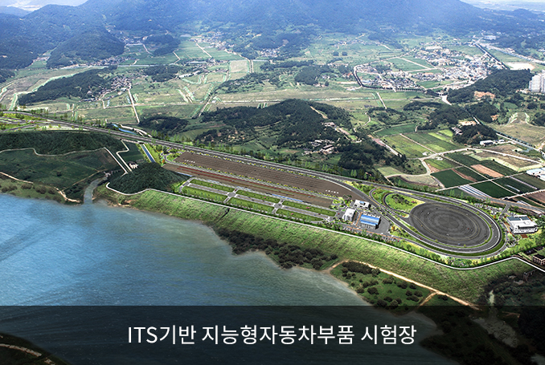
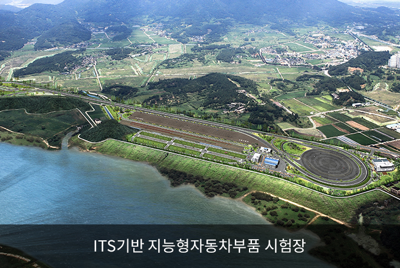

自動車産業
- Home
- 主要産業
- 自動車産業
知能型自動車の商用化研究基盤の構築
事業概要
- 事業機関 : 2010年6月 ～ 2015年2月
- 事業内容 : インフラ構築（部品試験場、自動車部品研究院の分院）
技術開発（中核要素技術、モージュル及びシステム）
- 総事業費 : 1,691億ウォン(国費968、市費475、民間資本248)
- 事業目標 : 技術水準を先進国と比べて65%→95%まで高める
- (ＩＴＳ基盤の知能型自動車部品試験場) 国際標準化機構（ＩＳＯ）の規格に準拠した部品及びシステムの信頼性試験、評価、認証試験場の構築
- 着工(2010年11月)、2012年に工程目標の70%、竣工(2013年2月)
 

- 事業期間 : 2007年8月～2013年2月
- 位置 : 達城郡・求智面一帯
- 規模 : 敷地385千㎡、走行路178千㎡
- 総事業費 : 975億ウォン(国費355、市費582、民間資本38)
※ 2012年 : 155億ウォン(国費70、市費80、民間資本5)
- (自動車部品研究院大邱センター)部品試験場内に建設し、技術開発拠点の役割と共に世界的な流れに能動的に対応できる技術開発の拠点としての役割を遂行(2010年6月～2015年2月、100億ウォン)
- 装備構築(15種)、隘路技術の支援、人材育成など
- 研究装備の需要調査及び装備構築(2012年3月～12月)、企業支援
※ 2012年 : 40億ウォン(国費17、市費23)
- (技術開発) 知能型自動車の革新要素部品、システム技術など商用化技術の開発を完成車業界と連携して推進する(2010年6月～2015年2月、905億ウォン)
- 中核要素技術、モジュール及びシステム技術開発の推進
- 継続課題(12つ)及び新規課題(11つ)の評価ㆍ選定(2012年4月～6月)
※ 2012年 : 253億ウォン(国費195、民間資本58)
自動車部品支援体系の構築及び技術開発
- (戦略産業振興) モージュル電装部品の開発、試験･信頼性評価支援のための自動車部品開発支援センターの構築(2009～2012年、78億ウォン)
- 装備構築、共同技術開発の支援、隘路技術の支援など
※ 2012年 : 11.6億ウォン(国費5、市費6.5、民間資本0.1) - 未来型自動車産業の中核である電子化部品開発及び人材育成などのために電子化自動車部品RICの運営支援(2006年～2016年、191億ウォン、啓明大学)
- 自動車ECU* 開発及び電子化自動車部品の研究開発
※ Electronic Control Unit、エンジンㆍAT(自動変速機)ㆍABSなどの状態をコンピューターで制御する電子制御装置
※ 2010年 : 18.8億ウォン(国費7億ウォン、市費1.4億ウォン、民間資本10.4億ウォン) - 自動車ECU* 開発及び電子化自動車部品の研究開発
- 環境に優しい高効率グリーンカーへのパラダイムの変化に対応するため知能型グリーンカーパワートレイン部品を開発(2011年～2015年、385億ウォン)
- 中核部品の基盤技術開発3つ、特化センター(延べ面積5,135㎡)及び装備構築
※ 2012年 : 132.5億ウォン(国費101、市費24、民間資本7.5) - 広域経済圏との連携ㆍ協力事業の大邱・慶北の市世代自動車部品開発及び企業支援事業を推進(2010年～2013年、135億ウォン)
- 研究開発(4つ)、中小企業向けのカスタマイズ型支援(製品の商用化、隘路技術、マーケティングなど)
※ 2012年 : 40.7億ウォン(国費22、市費3.4、慶北6.6、民間資本8.7)
グリーンカーのモデル運行
- グリーン成長先導都市を造成するため、燃費が優れてCO2の排出量が少ないハイブリッドバスをモデル運行(2台)
- EXCO～東大邱駅～半月堂(1日8会)、達城2次産業団地～大谷駅(1日4会)
- 電気自動車産業活性化方策(2009年10月)の後続措置として出庫された純粋電気自動車(Blue On)に対する実際道路モニターリング(1台)